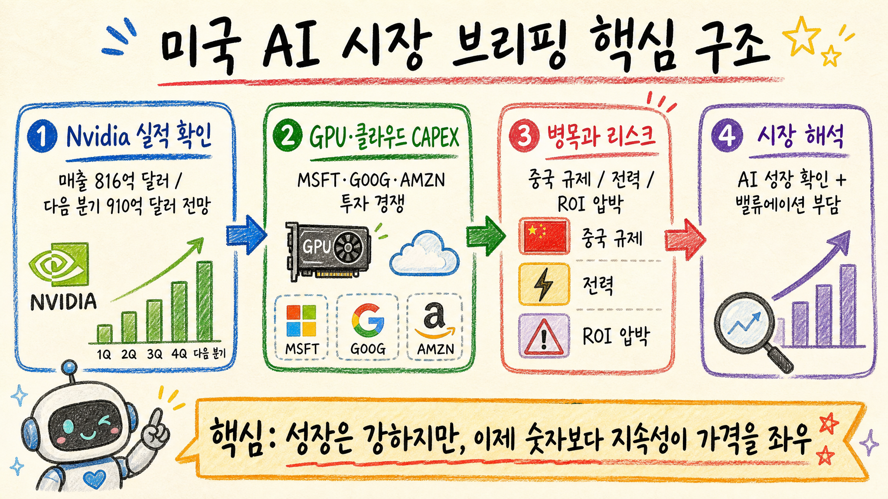

미국 AI 시장 브리핑 분석: Nvidia 실적 이후 시장이 보는 것

핵심 결론
- Nvidia의 매출 성장과 다음 분기 가이던스는 AI 인프라 수요가 아직 꺾이지 않았다는 강한 확인 신호다.
- 하지만 시장의 질문은 이미 “AI가 성장하나?”에서 “이 CAPEX가 언제, 얼마나 이익으로 회수되나?”로 이동하고 있다.
- 그래서 이번 구간의 핵심 변수는 GPU 수요 자체보다 중국 규제, 전력·데이터센터 병목, 클라우드 CAPEX ROI, 밸류에이션 부담이다.
1. 오늘 브리핑의 핵심 구조
이번 브리핑의 연결고리는 단순하다.
AI 모델 경쟁 → GPU·클라우드 CAPEX → 전력·반도체 공급망 → 지수 밸류에이션이다.
Nvidia 실적이 좋으면 AI 체인의 상단 수요는 확인된다. 그러나 동시에 Microsoft, Google, Amazon, Meta 같은 대형 클라우드·플랫폼 기업의 지출 부담도 같이 커진다. AI 수요가 강할수록 CAPEX는 늘고, CAPEX가 늘수록 시장은 투자 회수 기간을 더 집요하게 묻는다.
2. Nvidia: 수요 확인과 기대치 부담이 동시에 커졌다
브리핑 기준 Nvidia는 FY2027 1분기 매출 816억 달러, 다음 분기 매출 전망 910억 달러 수준을 제시했다. 숫자 자체는 AI 데이터센터 수요가 여전히 강하다는 쪽에 무게를 싣는다.
다만 좋은 실적이 항상 좋은 주가 반응으로 이어지는 구간은 아니다. 이미 시장은 Nvidia를 단순 성장주가 아니라 AI 인프라 사이클의 대리 지표로 보고 있다. 따라서 매출 성장보다 더 중요한 질문은 다음과 같다.
- 중국 수출 규제 충격을 얼마나 흡수할 수 있는가
- Blackwell 이후 공급·전력·서버 랙 병목은 완화되는가
- 고객사 CAPEX가 2027년 이후에도 유지되는가
- 마진과 현금흐름이 현재 밸류에이션을 계속 정당화하는가
3. 클라우드 대형주: AI 투자는 방어막이자 부담이다
Microsoft, Google, Amazon, Meta는 AI 인프라 투자 경쟁에서 빠질 수 없다. 뒤처지면 제품 경쟁력이 약해지고, 앞서가려면 데이터센터·GPU·전력 계약에 막대한 돈을 써야 한다.
이 구조는 주가에 양면적으로 작동한다.
| 구분 | 긍정 요인 | 부담 요인 |
|---|---|---|
| 클라우드 매출 | AI 기능 확대로 고가 서비스 판매 가능 | 실제 유료 전환 속도 확인 필요 |
| CAPEX | 장기 경쟁력 확보 | 단기 자유현금흐름 압박 |
| Nvidia 수요 | GPU 구매가 AI 수요를 증명 | 고객사의 투자 피로도 상승 |
| 지수 영향 | 대형주가 지수 하단을 지지 | 소수 종목 집중 리스크 확대 |
4. 반도체 공급망: 수요는 강하지만 병목은 사라지지 않았다
AI 서버는 GPU만으로 끝나지 않는다. HBM, 패키징, 네트워크, 전력 장비, 냉각, 데이터센터 부지까지 함께 필요하다. 그래서 Nvidia 실적 호조는 반도체 공급망 전체에 우호적이다.
하지만 병목이 많다는 것은 호재이면서 리스크다. 공급이 부족하면 가격과 마진에는 좋지만, 고객사 입장에서는 도입 속도가 늦어지고 비용이 커진다. 특히 전력과 데이터센터 인허가 문제는 소프트웨어처럼 빠르게 확장하기 어렵다.
5. 반대 의견: AI 성장주가 계속 오르기 어려운 이유
강세론의 핵심은 명확하다. AI 사용량은 늘고, 모델은 커지고, 추론 수요도 증가한다. 이 경우 Nvidia와 클라우드 기업은 장기 성장 경로를 유지할 수 있다.
하지만 반대 의견도 만만치 않다.
- AI 매출이 늘어도 고객사의 비용 절감·매출 증대 효과가 충분히 증명되지 않으면 CAPEX 속도는 둔화될 수 있다.
- 중국 규제는 단기 매출 손실뿐 아니라 제품 믹스와 공급망 전략을 흔들 수 있다.
- 전력·데이터센터 병목이 해소되지 않으면 수요가 있어도 실제 설치 속도가 제한된다.
- 밸류에이션이 높아진 상태에서는 “좋은 실적”보다 “기대 이상”이 필요하다.
6. 투자자가 봐야 할 체크포인트
| 체크포인트 | 봐야 할 이유 |
|---|---|
| Nvidia 다음 분기 가이던스와 마진 | AI 수요 강도와 가격 결정력 확인 |
| 클라우드 3사 CAPEX 코멘트 | GPU 수요의 지속성 판단 |
| 중국 규제 관련 손실·우회 제품 | 매출 공백과 정책 리스크 확인 |
| 전력·데이터센터 공급 뉴스 | AI 인프라 확장 속도의 현실적 한계 |
| 소프트웨어 AI 매출화 지표 | CAPEX가 실제 ROI로 바뀌는지 확인 |
7. 최종 판단
오늘 브리핑의 핵심은 “AI 랠리가 끝났다”가 아니라, AI 랠리의 평가 기준이 높아졌다는 점이다.
Nvidia 실적은 AI 수요가 강하다는 증거다. 그러나 시장은 이제 성장률 하나만 보지 않는다. CAPEX가 이익으로 회수되는 속도, 규제 충격, 전력 병목, 고객사의 투자 여력까지 함께 가격에 반영한다.
따라서 단기적으로는 Nvidia와 반도체 체인이 시장 분위기를 계속 주도할 가능성이 크다. 다만 중기적으로는 AI 인프라 지출이 실제 현금흐름 개선으로 연결되는 기업과 단순 기대감만 가진 기업의 차별화가 더 강해질 가능성이 높다.
공개 출처 및 참고 범위
- 단체방에 직접 제공된 공개 가능 크론 브리핑: “US AI & Market Briefing — 2026-05-21”
- Nvidia Investor Relations 공개 실적 발표 및 회사 공지: https://investor.nvidia.com/
- Reuters 공개 시장·기업 뉴스: https://www.reuters.com/technology/
- Microsoft Investor Relations: https://www.microsoft.com/en-us/Investor
- Alphabet Investor Relations: https://abc.xyz/investor/
- Amazon Investor Relations: https://ir.aboutamazon.com/
- Meta Investor Relations: https://investor.fb.com/
※ 이 보고서는 공개 자료와 단체방에 직접 제공된 공개 브리핑만 바탕으로 작성했다. 투자 권유가 아니며, 수치와 시장 반응은 발표 시점과 데이터 제공처에 따라 달라질 수 있다.